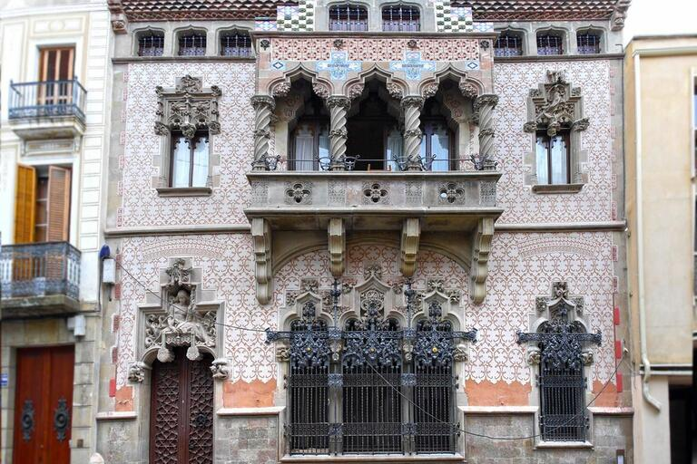

Visita · Mataró
La casa Coll i Regàs és l’edifici més emblemàtic del Modernisme mataroní, que va ser declarada l’any 2000 bé cultural d’interès nacional, en la categoria de monument històric. Obra de l’arquitecte…